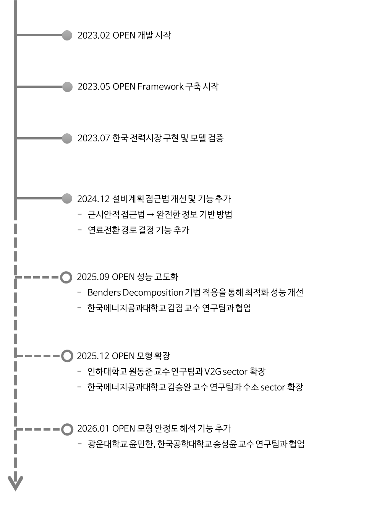

OPEN Concept and Approach
What is OPEN
-
OPEN은 전력 수요와 공급의 균형을 고려하여, 시스템 비용을 최소화하는 최적의 설비 투자 및 운영 계획을 수립하는 혼합정수계획(MILP, Mixed Integer Linear Program)기반의 모형이다. 본 모형은 장기적인 설비 계획(신규 건설 및 기존 설비 폐지 등)을 수립할 수 있고, 미리 결정된 설비를 기반으로 발전기 또는 저장장치의 운영 스케줄을 모의할 수 있다. OPEN은 모두 기동정지계획(UC, Unit Commitment)의 일반적인 구조를 따르며, 다음과 같은 주요 제약조건들을 반영한다. 추가로, 전원 계획 문제에서는 사용자 설정에 따라 최적의 연료전환 경로를 결정할 수 있고, 지역별 재생에너지 설치 잠재량을 반영할 수 있다.
- 전력 수급 균형
- 예비력 확보 조건
- 발전기의 기술적 제약(최소 기동/정지 운전 시간, 증∙감발률 등)
- 저장장치의 운영 제약
- 송전선로 조류 한계용량
- 온실가스 배출량 상한
-
OPEN은 다음과 결과를 제공할 수 있다.
- 용량 확장 계획(e.g., 발전기, 저장장치 등의 설비 폐지 또는 투자 결정)
- 발전기의 연료전환 계획(e.g., 석탄 → 암모니아 혼소)
- 조기폐지 결정시 폐지 보상 비용
- 송전망 확장 결정 및 지역간 조류 계산
- 발전기 및 저장장치의 운영 결과
- 정책결정 옵션 설정(e.g., 온실가스 배출량 제한 등)
- System Marginal Price 및 Locational Marginal Price
- OPEN은 각 설비의 유형, 비용, 가격 등 입력 데이터에 대해 사용자가 직관적으로 설정할 수 있도록 설계되어 있으며, 데이터 구조 또한 유연하게 구성되어 있어 다양한 조건과 시나리오를 손쉽게 반영할 수 있다. 본 모델은 Python 언어 기반으로 구현되어 있어 사용자 접근성이 높고, 필요에 따라 기능을 추가하거나 수정하는 것도 비교적 용이하다. 이러한 특징을 바탕으로, 사용자는 전력 부문뿐만 아니라 가스, 열, 전기차(EV) 등 다른 에너지 부문까지 확장하여 설비 계획 및 운영 시뮬레이션을 수행할 수 있다. 또한, OPEN은 주요 제약조건들이 모듈화되어 있어, 사용자의 분석 목적에 따라 제약조건을 선택적으로 활성화하거나 조정하는 것도 가능하다. 이렇듯, OPEN은 다양한 정책 분석, 시나리오 비교, 시스템 설계에 유연하게 활용될 수 있는 확장성과 실용성을 갖춘 플랫폼이다.
How to OPEN approach the Problem
- OPEN실행하기 전에 사용자는 먼저 지리적 및 시간적 해상도를 설정해야 한다. 해상도 설정 없이 전체 지역과 장기간의 수요 데이터를 모두 고려하게 되면, 문제의 크기가 과도하게 커져 적정 시간 내에 최적해를 도출하는데 어려움이 발생한다. 따라서 사용자는 송전계통을 적절히 축약하여, 하위 지역에 연결된 발전기, 전력수요, 송전선로 등을 대표모선으로 통합하는 축약계통을 구성하는 것을 권장한다. 시간 해상도의 경우에도 사용자는 전체 연간 수요 데이터를 그대로 사용하는 대신, 장기 설비 계획과 단기 운영 계획을 각각 대표하는 대표일(representative days)을 설정하여 수요 프로파일을 축약하는 것을 권장한다. 이러한 해상도 조정은 계산 효율성을 크게 향상시킬 수 있으며, OPEN이 보다 신속하고 안정적으로 최적해를 도출할 수 있도록 도와준다.
- OPEN의 설비계획 문제는 Two-stage Framework로 구성되며, 설비 투자∙폐지 결정과 운영 단계로 구분된다. 첫 번째 단계에서는 계획기간 동안의 건설, 운영, 연료 비용의 총 합을 최소화하여 설비계획을 도출한다. 두 번째 단계에서 이전 설비계획 단계에서 결정된 설비를 고정시키고, 고도화된 해상도를 기반으로 설비들의 운영 스케줄을 모의한다. 해당 단계에서는 운영기간을 여러 작은 문제로 분해하여 풀이하고, 두 번째 문제에서 도출된 특정 지표가 첫 번째 단계의 제약을 만족할 때까지 반복적으로 문제를 풀이한다.
- 첫 번째 단계에서는 사용자가 설정한 대표일을 기반으로 문제를 풀이한다. 이때 고려되는 비용은 건설비용, 운영비용, 연료비용의 총합이며, OPEN은 이를 최소화하는 방향으로 최적의 설비 구성을 도출한다. 국가 단위 수준의 문제를 풀이할 경우에는 선형화된 문제로 설정하는 것을 권장하지만, 사용자 설정에 따라 설비의 건설/운영/폐지와 연료전환 여부 등이 이진 또는 정수 변수로 결정될 수 있다.
- 두 번째 단계에서는 첫 번째 단계에서 결정된 설비 계획을 기반으로 계획기간 동안의 운영 스케줄을 모의한다. 앞서 결정된 설비 계획을 기반으로 설비가 고정되므로, 운영비용과 연료비용의 총 합에 대해서만 최소화하는 운영계획을 결정한다. 이 때, 문제는 혼합정수선형계획(MILP) 문제로 설정되며, 각 설비의 기동정지, 최소운전시간, 출력증감발율 등 기술적 제약조건을 상세히 반영하여 현실적인 설비 운영방식을 모의한다.
- OPEN에서 제공하는 분석 모듈은 단일 실행으로 결과를 도출하지 않고, 1단계와 2단계를 반복적으로 수행하여 결과의 현실성을 높인다. 구체적으로, 두 번째 단계의 운영 모의가 종료되면 단기 운영으로 인한 불확실성을 LNG 발전량으로 검토한다. 즉, 설비계획에서 복합발전의 최소 발전량을 운영 모의로부터 도출된 발전량으로 제약한다. 운영 모의 단계의 결과가 모든 정책적 제약과 불확실성 제약을 만족시킬 때까지 두 단계를 반복 수행한다. 이는 운영의 불확실성이나 정책 제약을 설비계획에 피드백 형태로 반영하여, 계획과 운영 간의 정합성을 확보하기 위함이다. 즉, 이와 같은 반복 과정을 통해 유연성 문제와 정책적 제약이 설비계획에 반영될 수 있도록 개발되었다.

| 구분 | 장기 전원계획 | 단기 운영계획 |
|---|---|---|
| 목적 | 설비 투자, 폐지, 연료전환 결정 | 운영계획 결정 |
| 대표일 선정 | 적용 | 미적용 |
| 시간 해상도 | - | 1시간 단위 |
| 기술적·경제적 특성 | 보통/낮음 | 높음 |
| 문제 유형 | 선형 계획법 (LP) | 혼합 정수 선형 계획법 (MILP) |
| 공통 제약조건 |
• 수요 공급 일치 제약 • 예비력 제약 • 송전 네트워크의 DC power flow 제약 • 온실가스 배출량 상한 제약 |
|
| 개별 제약조건 |
• 신규 건설·운영·폐지와 관련된 설비 변수의 선정 제약 • 선행화 된 설비 운영 제약 • 연료전환 제약 • 재생에너지 설치 잠재량 제약 |
• 설비 운영 변수의 정수형 제약 |
Development & Upgrade Roadmap of OPEN
- 현재 OPEN은 발전기, 송전선로, 저장장치 등이 연계된 시스템에 한하여 설비 계획과 운영 모의에 대한 분석 모듈을 제공하고 있다. 사단법인 넥스트는 한국의 학계 연구팀들과 함께 현재 분석 범위를 넘어서 수소, 가스, 전기차 등 다양한 컴포넌트들이 동시에 반영될 수 있도록 OPEN을 확장해 나갈 계획이다.
- 다양한 상업용, 비상업용 모델들도 최적화 문제의 크기가 커짐에 따라 최적해를 결정하는데 어려움이 있어 공간적∙시간적 해상도를 축소하는 방식으로 문제 풀이에 접근한다. 사단법인 넥스트는 전력 시스템 최적화에 우수한 전문성을 가진 학계 연구팀과 협업하여 최적화 기법 중 하나인 Benders Decomposition 방법론을 OPEN에 적용해 최적화 측면에서 계산 성능을 향상시키고자 한다.
